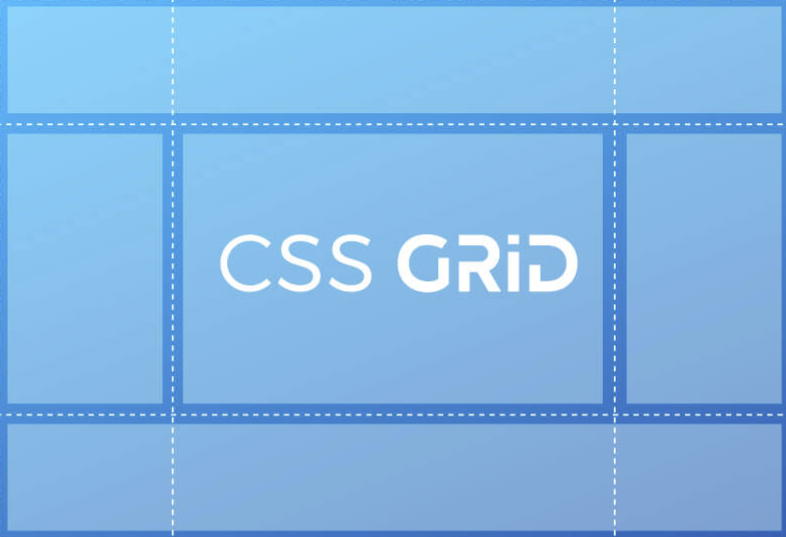

CSS GRID
Figura1.Imagen de guia completa para aprender a utilizar CSS Grid Layout.Tomado de https://www.programandoamedianoche.com/2019/05/guia-completa-para-aprender-a-utilizar-css-grid-layout/
Css Grid es la mejor opción para estructurar, organizar y diseñar los
elementos de nuestro sitio web, ofreciéndonos un sistema de disposición
apropiado de forma nativa en el navegador y a nuestra total disposición.
En Css solemos utilizar múltiples propiedades para estructurar nuestros
sitio web, utilizando tablets, inline-block, floats, relative o hasta el
mismo flexbox que solo utiliza una dimensión.
Terminologia en Grid
-Grid Container: Es nuestro elemento “Padre”, donde se asigna un {display:grid;}
y nos permitirá colocar otras propiedades para manipular nuestro diseño.
-Grid Item: Son los hijos directos de nuestro container, estos los manejaremos
a nuestra voluntad, nuestras filas y columnas que moveremos a nuestro gusto.
-Grid Line: Son las lineas divisorias horizontales y verticales.
-Grid Track: Es el Espacio entre dos líneas adyacentes. Filas y columnas.
-Grid Cell: Nuestras celdas serán el espacio entre dos filas adyacentes y 2 columnas adyacentes.
-Grid Area: Espacio rodeado por 4 grid lines
Crear contenedores y elementos
CSS grid emplea dos unidades diferentes: contenedores y elementos. El contenedor
es el nivel superior y en él se definen las propiedades que luego tendrán todos los
elementos. Desde un punto de vista jerárquico, un elemento está dentro de un contenedor.
Además de eso, se sigue necesitando HTML para el diseño de la rejilla o grid. En la parte HTML
del código fuente, se crean los elementos individuales (texto, gráficos, etc.), que luego se recogen
dentro de CSS grid y se disponen en la posición correcta.
Figura2.Imagen de Css Grid,la mejor opcion para crear diseños web.Tomado de https://www.programandoamedianoche.com/2019/05/guia-completa-para-aprender-a-utilizar-css-grid-layout/
Columnas y filas
En cuando se trabaj columnas y filas podemos decir que en Css Grid ,podemos crear cuadriculas,donde
se distribuyen y se forman dependiendo a donde las quiera puestas el usuario.